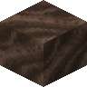

所属标签
获取方式
战利品箱 (2)
eternalnether:chests/catacomb/treasure_ribirons_spellbooks:chests/battleground/piglin_camp
方块掉落 (1)
纯原版配方（合成、烧炼等）不在本图鉴收录范围，以下仅列出模组与 CraftTweaker 相关配方。
模组配方 · 用于 (3)
有序合成The Block Box


原始 JSON
{
"type": "minecraft:crafting_shaped",
"category": "misc",
"key": {
"S": {
"tag": "minecraft:soul_fire_base_blocks"
},
"c": {
"item": "minecraft:chain"
},
"i": {
"tag": "c:ingots/iron"
}
},
"pattern": [
"c c",
"iSi",
" i "
],
"result": {
"count": 1,
"id": "blockbox:soul_brazier"
}
}无序合成The Block Box

原始 JSON
{
"type": "minecraft:crafting_shapeless",
"category": "misc",
"ingredients": [
{
"item": "blockbox:brazier"
},
{
"tag": "minecraft:soul_fire_base_blocks"
}
],
"result": {
"count": 1,
"id": "blockbox:soul_brazier"
}
}oritech:foundryOritech

原始 JSON
{
"neoforge:conditions": [
{
"type": "neoforge:mod_loaded",
"modid": "enderio"
}
],
"type": "oritech:foundry",
"ingredients": [
{
"tag": "c:ingots/gold"
},
{
"tag": "minecraft:soul_fire_base_blocks"
}
],
"results": [
{
"count": 1,
"id": "enderio:soularium_ingot"
}
],
"time": 180
}原版修改详情 (1)
标签指向 (1)
Iron's Spells 'n Spellbooks 被标签 irons_spellbooks:spectral_hammer_mineable 收录